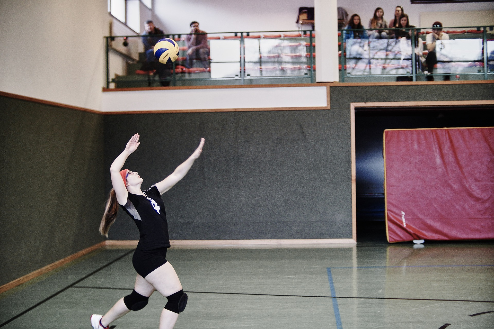
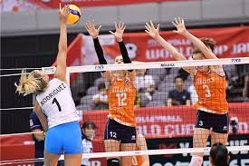
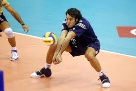
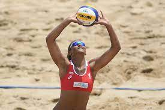
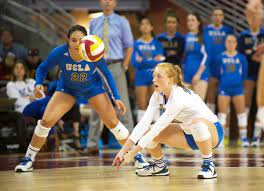
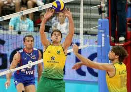
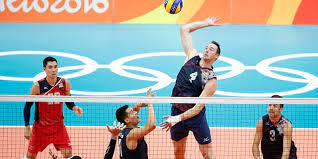
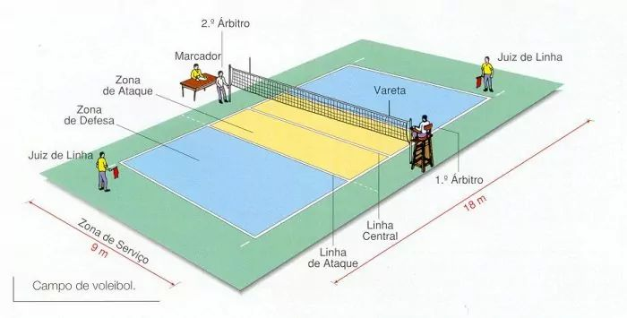
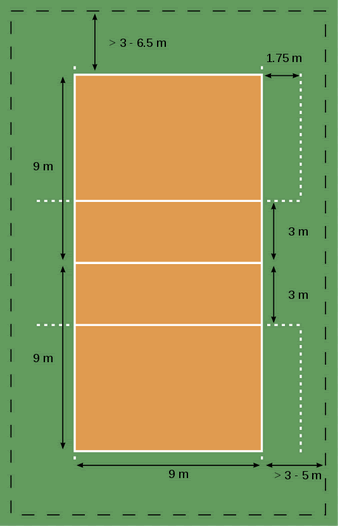

Se inicia en cada jugada por detrás de la línea de fondo.
Como estrategia va dirigido al punto débil del equipo contrario.

Ataque:
Tiene como fin interceptar cualquier balón del equipo contrario. Se trata de saltar junto a la red con los brazos alzados para devolver el balón al campo contrario, o estrecharle el campo de ataque para buscar que el balón quede fuera de juego. En el bloqueo pueden participar tres jugadores.

Recepción:
Controlar el balón para entregarlo al compañero para que este pueda jugarlo.

Colocación:
Al jugador que le corresponde hacer el segundo toque debe poner el balón en perfectas condiciones para que el tercer jugador pueda rematarlo en el campo contrario. Los remates tienen como fin ir dirigidos a las zonas mal defendidas e ir con velocidad para que el jugador contrario no lo pueda controlar.

Golpe de antebrazos:
Se colocan los antebrazos a la altura de la cintura para recibir y golpear los balones bajos a fin de hacer un buen pase al compañero de juego o evitar que el balón toque el suelo, de esta manera el balón puede volver a tomar altura y una mejor dirección.

Golpe de dedos:
Es un golpe preciso que se emplea para realizar pases entre compañeros o para pasar la pelota al otro lado de la red. En este caso se reciben las pelotas altas con los dedos lo que permite darle mayor precisión y dirección.

Remate:
Se trata de devolver la pelota al lado contrario con gran fuerza y de manera inesperada para los contrincantes, a fin de lograr anotar un punto.

Caracteristicas del voleibol

El campo o cancha de juego es rectangular y debe estar debidamente señalado por una serie de líneas que delimitan las diversas áreas de juego.
Es necesario que se coloque la red en el medio campo cumpliendo lo indicado en las reglas del juego.
La pelota se diferencia en tamaño y peso con respecto con los balones empleados en otros deportes como el fútbol o el baloncesto.
Todos los jugadores deben hacer uso del uniforme, en el cual se sindica el número y nombre de este.
Los juegos constan de 4 sets, sin embargo esto puede variar y el ganador de un juego se puede definir en tres o con sets según sea el caso.
El tiempo que dura un juego de voleibol es variable, por tanto depende del desempeño de los jugadores y del arbitraje.
Reglas Basicas del voleibol

Los equipos de voleibol pueden estar constituidos de 12 jugadores como máximo. Seis jugadores en el terreno de juego y hasta seis suplentes.
e consigue un punto cuando el equipo enemigo no controla bien el balón o comete una falta. El balón tiene que pasar por encima de la red para que cuente como punto.
Durante el juego el balón tiene que ser golpeado continuamente, no puede ser retenido ni tomado por ningún jugador.
Los jugadores de un equipo deben evitar que el balón llegue al suelo dentro de su campo. Al tocar el suelo, se le otorga un punto al equipo contrario.
Si el balón acaba fuera del campo de juego, se considerará falta al equipo que tocase de ultimo el balón y se le anotará un punto al equipo contrario. Se considera fuera del campo cuando el balón toca el techo, la red, los postes, el público o a los árbitros.
Es punto para el equipo contrario si un equipo da tres toques seguidos sin haber pasado el balón al campo contrario o si un jugador toca el balón dos veces consecutivas.
Hay que ir rotando cada punto, en el sentido de las agujeras del reloj. Cuando un equipo va a sacar, y los jugadores de ese equipo están mal situados se considera falta de rotación y se pierde la jugada.
Cuando se va a sacar, ningún jugador puede tocar la red.
Si el saque no se ejecuta bien, se considera falta y saca el equipo contrario.
Si un equipo marca punto, saca otra vez
Después del saque, los jugadores pueden ocupar la posición que quieran dentro de sus campos.
Los jugadores no pueden traspasar la línea entrando en el campo del equipo contrario.
Se puede rematar a cualquier altura. También está permitido el contacto del balón con cualquier parte del cuerpo, incluidos los pies.
El partido está formado por tres, cuatro o cinco sets. Un equipo gana un set cuando alcanza o supera los 25 puntos con una ventaja de dos.
Los equipos vencerán cuando ganen 3 sets y en cada set ganen al otro equipo de 2 puntos.